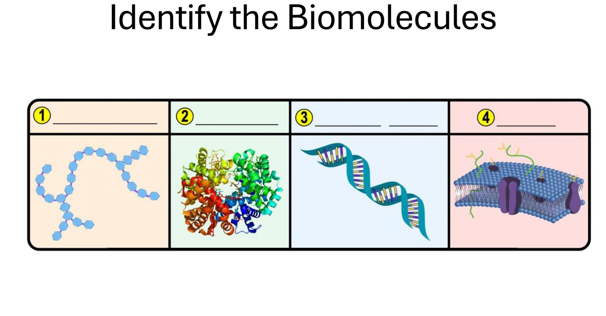
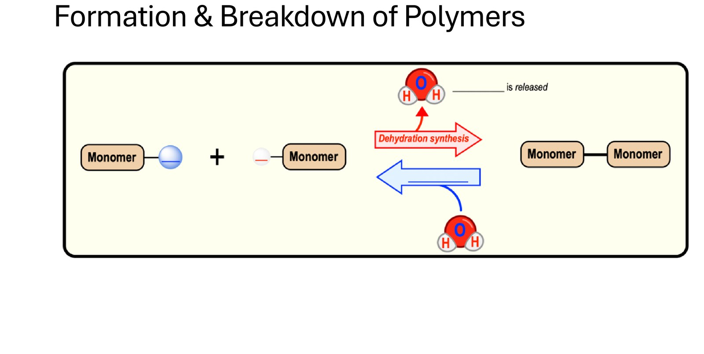
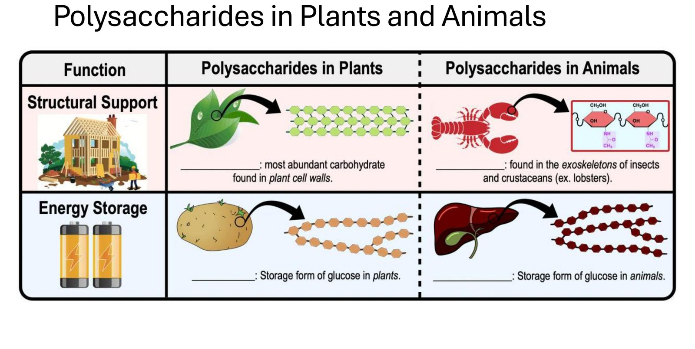
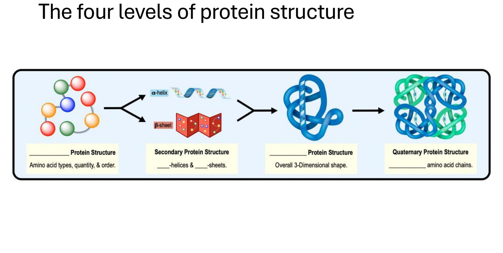
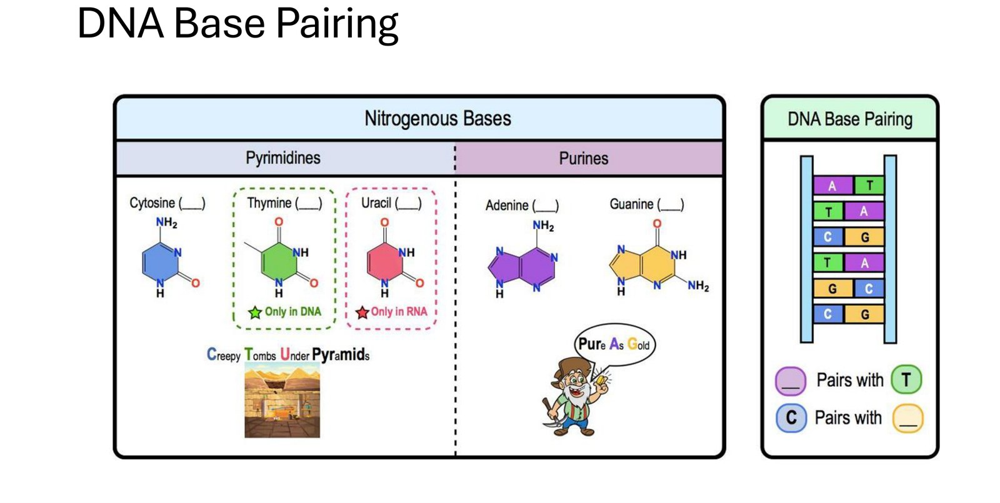
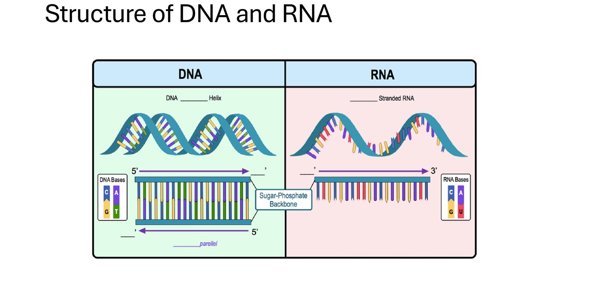
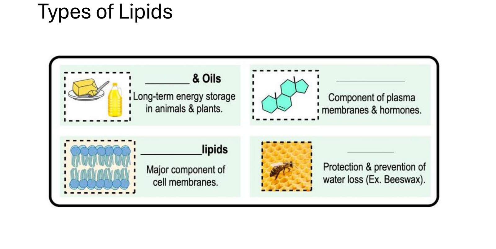
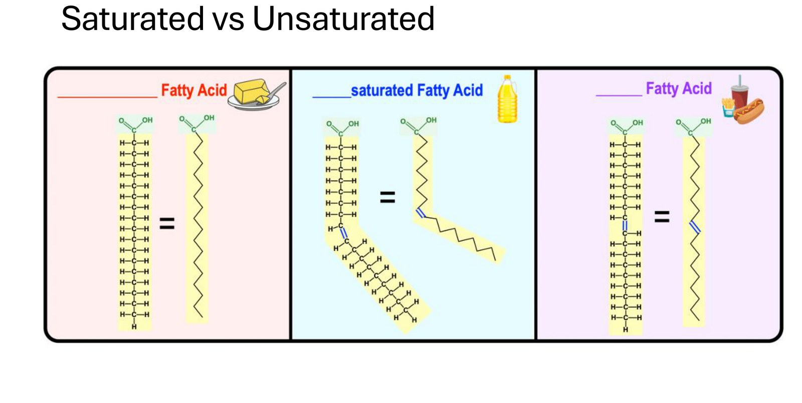
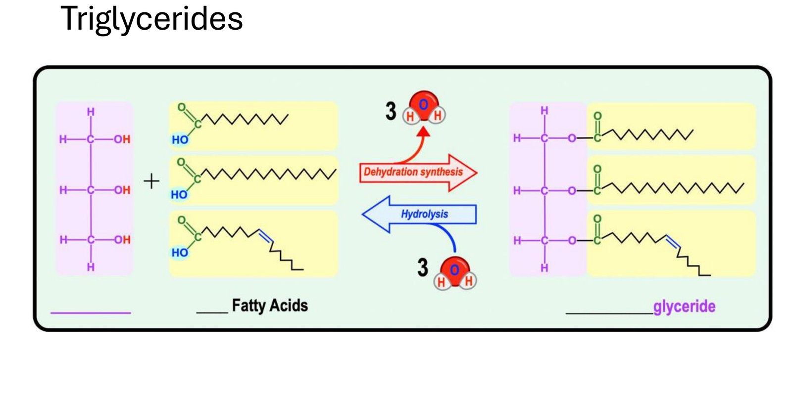
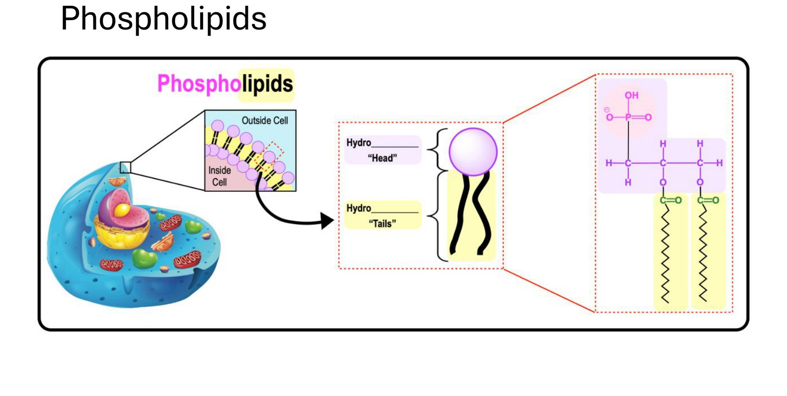

What is a biomolecule?
Start here, before any of the four categories. This is the one idea that makes the rest of the chapter click into place instead of feeling like four unrelated topics to memorise.
A biomolecule is a molecule that a living thing builds and needs to stay alive — and almost all of them are built from the same six elements, on a carbon backbone, using the same handful of chemical tricks repeated over and over.
The six elements everything is built from
Nearly every atom in every biomolecule you'll see today is one of six elements: Carbon, Hydrogen, Nitrogen, Oxygen, Phosphorus, Sulfur — commonly remembered as CHNOPS. Carbon does the real work: it can form four bonds at once, which lets it build long chains, branches, and rings. Every biomolecule you're about to look at is really just carbon scaffolding with different groups of these other elements hung off it.
Four classes — and a pattern that covers three of them
Carbohydrates, proteins, and nucleic acids are all built the exact same way: small repeating units (monomers) link into long chains (polymers) by kicking out a water molecule at each join — dehydration synthesis. Run that reaction backward, add water back in, and the chain breaks apart again — hydrolysis. Once you've understood that one mechanism, you already understand 75% of this chapter's chemistry.
| Class | Monomer | Built by | What it's for |
|---|---|---|---|
| Carbohydrate | Monosaccharide | Dehydration synthesis | Energy, structure |
| Protein | Amino acid | Dehydration synthesis | Enzymes, structure, transport, defence, signalling — nearly everything |
| Nucleic acid | Nucleotide | Dehydration synthesis | Storing and transmitting information |
| Lipid | — no single monomer — | (mostly) dehydration synthesis, but not defined by it | Energy storage, membranes, signalling |
Lipids are not grouped together because they share one repeating building block — they don't. They're grouped together because they share a property: they're hydrophobic (nonpolar, don't mix with water). A fat, a steroid, and a wax look nothing alike structurally, but all three refuse to dissolve in water — and that single property is the entire reason they're filed under the same heading. Every other class is defined by its parts; lipids are defined by their behaviour. That distinction alone will resolve most of the "wait, why is this a lipid" confusion later in the chapter.
Every section below maps onto one slide from today's deck. Each has the blanks answered — click any dotted underline to reveal it, the same way the slide will fill in live. Tricky spots are flagged explicitly so you're not caught off guard.
Page-by-page answer key
Every blank from the deck, answered. Click a dotted underline to reveal it — click again to hide it, so you can test yourself before looking.
Identify the Biomolecules

1 — __________ 2 — __________ 3 — __________ 4 — __________
1 is a branching chain of linked sugar units — a polysaccharide. 2 is a folded, coloured ribbon diagram — the classic way software draws a protein's tertiary structure. 3 is unmistakably the DNA double helix. 4 is a lipid bilayer.
Look closely and image 4 also shows purple embedded channel proteins and green branching sugar chains — so it isn't purely lipid. The expected answer is still lipid, because the bilayer itself — the structure doing the organising — is built from phospholipids. But it's worth saying out loud to the room: a real cell membrane is never just one biomolecule. It's lipids, proteins, and attached carbohydrates all working together — this is called the fluid mosaic model, and it's a good preview of where the course goes next.
Formation & Breakdown of Polymers

__________ is released.
Two monomers join, a bond forms between them, and a water molecule is kicked out as a byproduct — that's dehydration synthesis (the red arrow). Run it in reverse — add a water molecule back in to break that bond — and you get hydrolysis (the blue arrow), splitting the polymer back into monomers.
The names describe the water, not the polymer. De-hydration = removing water (building up). Hydro-lysis = water breaking something apart (lysis = to loosen/split). This single diagram is the mechanism behind carbohydrates, proteins, and nucleic acids alike — only the monomer changes.
Polysaccharides in Plants and Animals

| Function | Plants | Animals |
|---|---|---|
| Structural support | __________ — most abundant carbohydrate in plant cell walls | __________ — found in exoskeletons of insects and crustaceans |
| Energy storage | __________ — storage form of glucose in plants | __________ — storage form of glucose in animals |
Cellulose, starch, and glycogen are all polymers of the exact same sugar, glucose. Chitin uses a modified glucose (with a nitrogen-containing group attached — which is why chitin, unusually for a carbohydrate, contains nitrogen). What actually makes these four molecules behave so differently is the type of bond linking the glucose units together and how much the chain branches — not the building block itself. Cellulose's bonds make straight, tightly H-bonded fibres (strong — good for a wall); starch and glycogen's bonds make coiled, branched chains (easy to break back down fast — good for storage), with glycogen branching even more than starch to release glucose quicker, matching an animal's faster energy demand.
The Four Levels of Protein Structure

| Level | Fill in | Description |
|---|---|---|
| 1 | __________ | Amino acid types, quantity, & order |
| 2 | Secondary — ____-helices & ____-sheets | Local folding patterns from hydrogen bonding along the backbone |
| 3 | __________ | Overall 3-dimensional shape |
| 4 | Quaternary — __________ amino acid chains | More than one folded chain joining together |
This is the most commonly confused pair in the whole chapter. Tertiary is still just one polypeptide chain, folded up into its final 3D shape. Quaternary only exists if two or more separate chains (subunits) come together — like haemoglobin's four subunits. Not every protein has a quaternary structure; plenty of proteins do their job as a single folded chain and stop at tertiary. If you can't count more than one chain, it isn't quaternary.
DNA Base Pairing

Pyrimidines (single ring): Cytosine, Thymine (DNA only), Uracil (RNA only). Purines (double ring): Adenine, Guanine.
Base pairing: ______ pairs with T. C pairs with ______.
"Creepy Tombs Under Pyramids" → Cytosine, Thymine, Uracil → Pyrimidines. "Pure As Gold" → Purines → Adenine, Guanine. Both are already good; introducing a second, competing mnemonic in class just gives students two things to mix up instead of one.
It isn't arbitrary. Purines are physically bigger (two fused rings); pyrimidines are smaller (one ring). Pairing a big one with a small one every time keeps the DNA ladder's rungs a constant width all the way up the helix — two purines together would be too wide, two pyrimidines too narrow. On the Thymine/Uracil mix-up: Thymine is chemically Uracil plus one extra methyl group, and that extra group is what lets DNA repair enzymes recognise "this doesn't belong" if a Uracil ever shows up in DNA by mistake (from damage) — RNA, being short-lived, doesn't need that safeguard and uses the simpler, cheaper Uracil instead.
Structure of DNA and RNA

DNA — ______ Helix. Strands run __________ — one strand reads 5′→3′ left to right, the other reads 3′→5′ left to right.
RNA — ______ Stranded RNA, still read 5′→3′.
The two strands run in opposite directions because of how the sugar-phosphate backbone is built: each strand has a chemically distinct 5′ end (where a phosphate group sits) and 3′ end (a free -OH group). For the bases to pair up correctly (A with T, C with G) between two strands stacked face to face, the strands have to be flipped relative to each other — that flip is what "antiparallel" means. It isn't a separate design choice layered on top of base pairing; it falls directly out of the chemistry of how the backbone is put together.
Types of Lipids

| Fill in | Function |
|---|---|
| ______ & Oils | Long-term energy storage in animals & plants |
| __________ | Component of plasma membranes & hormones |
| ________lipids | Major component of cell membranes |
| ______ | Protection & prevention of water loss (e.g. beeswax) |
Steroids are four fused rings, nothing like a greasy chain — which is exactly why students resist calling them a lipid. Remember the framing from the start of this page: lipids are defined by a property (hydrophobic), not a shape. Cholesterol and the steroid hormones (testosterone, oestrogen, cortisol) are built almost entirely from carbon and hydrogen, so they don't mix with water — that alone qualifies them as lipids, ring shape and all.
Saturated vs. Unsaturated

__________ Fatty Acid (butter) — straight chain, all single bonds.
Un__________ Fatty Acid (oil) — one double bond, kinked chain.
______ Fatty Acid (fries/soda) — has a double bond, but stays straight.
The intuitive rule so far is "double bond = kink," and the middle panel confirms it. Then the third panel has a double bond too — and stays straight. That's the entire point of showing trans fat here: the double bond's geometry (trans vs. cis configuration) decides whether the chain kinks or not, not just its presence. Because a trans fat's chain stays straight, it packs together and behaves chemically like a saturated fat — solid, and linked to raised LDL cholesterol — even though it's technically "unsaturated." This is why trans fats get singled out as the unhealthy exception rather than lumped in with normal unsaturated (cis) fats from vegetable oil.
Triglycerides

__________ + ______ Fatty Acids → (dehydration synthesis) → Tri__________ + 3 H₂O
Easy to glance at this and assume "one dehydration reaction happens, one water comes out." Look at the diagram again: three water molecules are released, because glycerol has three -OH groups, and each one forms its own ester bond with its own fatty acid. Three bonds form, three separate water molecules leave — that's the "tri" in triglyceride, and it's also why hydrolysing a triglyceride back down needs three water molecules put back in, not one.
Phospholipids

Hydro________ "Head" (the phosphate group). Hydro________ "Tails" (the two fatty acid chains).
Line this up against the triglyceride you just answered: a phospholipid is a triglyceride with one of its three fatty acid tails swapped out for a phosphate group. That single swap changes everything. A triglyceride is fully hydrophobic on all three arms — it just balls up and stores energy. A phospholipid has a polar, water-loving head (the phosphate) attached to two nonpolar, water-fearing tails, which makes it amphipathic. Amphipathic molecules in water spontaneously arrange into a two-layer sheet — heads facing outward to the water on both sides, tails hidden in the middle — which is exactly the bilayer that every cell membrane is built from. One substitution is the entire reason membranes are possible.
Answers and explanations built from the slide deck used in class (fill-in-the-blank format) plus Campbell Biology Chapter 5. Not for display to students — the original PPT stays on the projector; this page is your own reference.
Tricks & mnemonics to share
Memory aids you can say out loud in the room — each one is short enough to repeat back on the spot.
CHNOPS
The six elements that make up almost every biomolecule: Carbon, Hydrogen, Nitrogen, Oxygen, Phosphorus, Sulfur.
Say it like this: "If you can name CHNOPS, you already know what 95% of your own body is made of."Dehydration vs. Hydrolysis
The names describe what happens to water, not the molecule.
Say it like this: "De-HYDRA-tion removes water to build up. HYDRO-lysis uses water to break down. If you can spot 'hydro' in the word, water is going in, not coming out."The monomer pattern
Carbohydrate → monosaccharide. Protein → amino acid. Nucleic acid → nucleotide. Lipid → no single monomer at all.
Say it like this: "Three of the four have a matching partner word you already say together naturally. Lipid is the odd one out on purpose — that's the exam trap."Purines vs. pyrimidines (from your own slide)
"Creepy Tombs Under Pyramids" → Cytosine, Thymine, Uracil → Pyrimidines. "Pure As Gold" → Purines → Adenine, Guanine.
Say it like this: "Big pairs with small, every rung, all the way up the ladder — that's why a purine always pairs with a pyrimidine and never with another purine."Saturated vs. unsaturated
Saturated = "saturated with hydrogen," no double bonds, straight chain, solid at room temperature.
Say it like this: "Saturated fat sits solid on the counter, like butter. Unsaturated has a kink from a double bond and stays liquid, like oil in a bottle."Trans fat, the exception
Has a double bond like unsaturated fat, but stays straight like saturated fat.
Say it like this: "Trans fat has the double bond of an unsaturated fat but the shape and health risk of a saturated one — worst of both."Cellulose · Chitin · Starch · Glycogen
All (near enough) the same glucose monomer — the bond type and branching is what differs.
Say it like this: "Plants build with cellulose, store with starch. Animals build with chitin (if you're an arthropod), store with glycogen. Same brick, different blueprint."Tertiary vs. quaternary
Tertiary = one folded chain. Quaternary = two or more chains joined.
Say it like this: "Count the chains. One folded chain stops at tertiary. The moment you have a second chain joining in, it's quaternary."Why a steroid still counts as a lipid
Lipids are defined by a property, not a shape.
Say it like this: "Don't ask what it looks like — ask whether it mixes with water. If it doesn't, it's a lipid, ring-shaped or not."Phospholipid = triglyceride, one swap
Swap one of a triglyceride's three fatty acids for a phosphate group and you get a phospholipid.
Say it like this: "One substitution turns a pure energy-storage molecule into the molecule every membrane on Earth is built from."Doubt bank
The questions likely to come up once students actually sit with this. Searchable.
Check yourself
Ten questions across all four biomolecule classes. Try this once before you consider yourself done studying.
Cheat sheet
Every answer on one screen. Glance at this right before the tutorial starts.
The one-line version
Biomolecules are built on carbon from six elements (CHNOPS); three of the four classes are chains of monomers joined by dehydration synthesis and split by hydrolysis; lipids are the exception, grouped by being hydrophobic rather than by sharing one monomer.
Every blank, by slide
| Slide | Answers |
|---|---|
| 2 · Identify | Carbohydrate · Protein · Nucleic Acid · Lipid |
| 3 · Polymers | Water is released (dehydration synthesis / hydrolysis) |
| 4 · Polysaccharides | Cellulose & Chitin (structure) · Starch & Glycogen (storage) |
| 5 · Protein structure | Primary · alpha/beta (secondary) · Tertiary · multiple chains (quaternary) |
| 6 · Base pairing | A pairs with T · C pairs with G |
| 7 · DNA/RNA structure | Double Helix, antiparallel (DNA) · Single stranded (RNA) |
| 8 · Lipid types | Fats & Oils · Steroids · Phospholipids · Waxes |
| 9 · Fatty acids | Saturated · Unsaturated · Trans |
| 10 · Triglycerides | Glycerol + 3 Fatty Acids → Triglyceride + 3 H₂O |
| 11 · Phospholipids | Hydrophilic head · Hydrophobic tails |
The four classes
| Carbohydrate | monomer: monosaccharide — energy + structure |
| Protein | monomer: amino acid — nearly everything a cell does |
| Nucleic acid | monomer: nucleotide — stores/transmits information |
| Lipid | no single monomer — defined by being hydrophobic |
Built for TA duty, Monday 7 September, from the Biomolecules deck (Campbell Biology Ch. 5). Not for display to students — the original PPT stays on the projector; this page stays on the iPad.